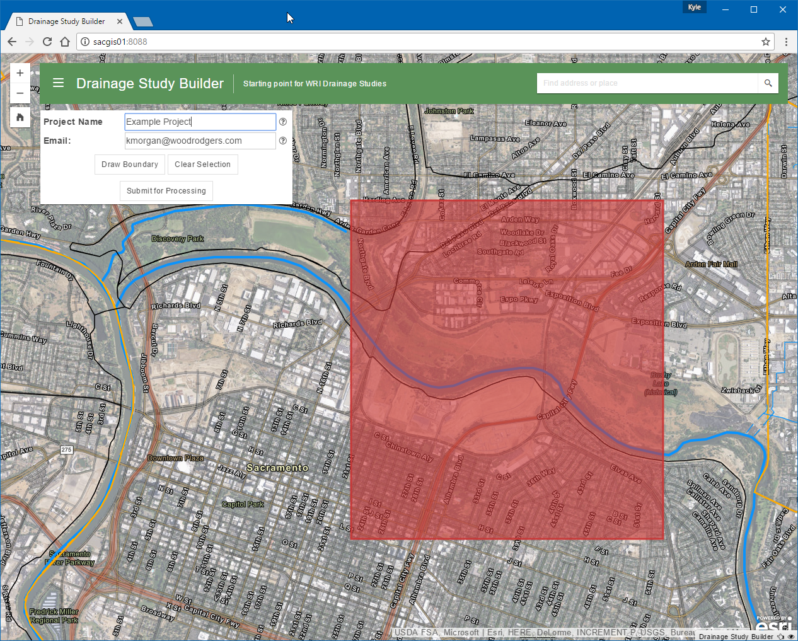

# <span style="font-size: 0.5em;">Advanced ArcGIS Server GP Publishing & Maintenance</span>
### Kyle Morgan <div class="small_details"> <span style="font-size: 0.8em;">GIS Developer @ <a href="http://www.woodrodgers.com" target="_new">Wood Rodgers, Inc.</a></span> <p></p> <small> <i class="fa fa-envelope" aria-hidden="true"></i> <a href="mailto:kmorgan@woodrodgers.com?subject=Esri UC 2017">kmorgan@woodrodgers.com</a> | <i class="fa fa-twitter-square" aria-hidden="true"></i> <a href="https://twitter.com/gisdev_km">@gisdev_km</a> </small> </div>
# Why this topic?
#### Highlight the power of Geoprocessing Tools <div class="fragment current-visible"> <small>_or_ <br> `"How to get the most distance out of your server license"`</small><br> </div>
# Software * Esri ArcGIS Server * Esri ArcGIS Desktop * Python <br> <small>(Rec. IDE's: PyCharm, Wingware | Rec. Editors: Visual Studio Code, Sublime Text Editor, Atom)</small>
# When to create a GP tool?
1. When your workflow can be automated 2. When your data sources are locked down 3. When your workflow takes several minutes and requires elevated licensing<br> 4. Need to run it both on the Desktop and in a Web Application<br> <div class="fragment current-visible"> <div style="width: 100%; text-align: center; font-weight: bold;">=</div> <h3>A Perfect time for a GP Tool \* </h3> <small>_* ArcGIS Server GP capabilities depend on license level (Standard or Advanced)_</small> </div>
# Step 1 ## Write your tool using Python
# Step 2 ## Test your tool using ArcMap
# Step 3 ## Publish the Tool
# Step 4 ## Sprinkle in the Advanced
### Edit <br> vs<br> <br>

## Server Matrices * [ArcGIS 10.4 for Server](http://links.esri.com/esri-arcgis_server_product_functionality_matrix) * [ArcGIS Enterprise 10.5](http://links.esri.com/enterprise_matrix)